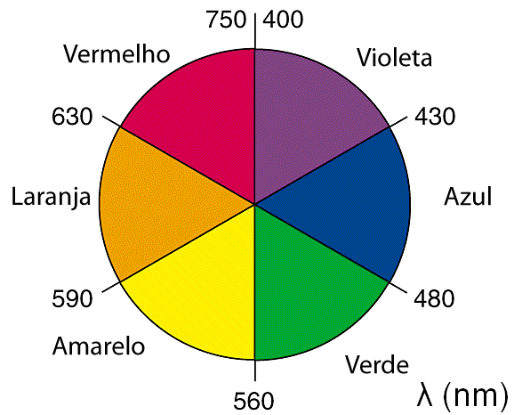

Harmonias Cromáticas no Design Gráfico
Criado por: [Seu Nome Completo]
Harmonia Cromática: Complementar
Paleta de Cores: Azul (#007BFF) e Laranja (#FFA500)
O que é o Círculo Cromático?
O círculo cromático é uma ferramenta essencial no design gráfico...
Principais Harmonias Cromáticas
- Monocromática: Usa variações de uma única cor.
- Análoga: Combina cores vizinhas no círculo cromático.
- Complementar: Usa cores opostas para alto contraste.
- Complementar Dividida: Variedade sem perder equilíbrio.
- Tríade: Três cores equidistantes no círculo cromático.
- Tetrádica: Quatro cores em forma de retângulo.
Como Escolher as Cores do Site?
As cores do site devem criar um equilíbrio visual e garantir boa legibilidade.